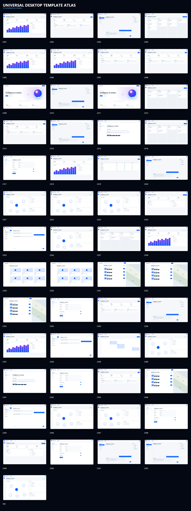
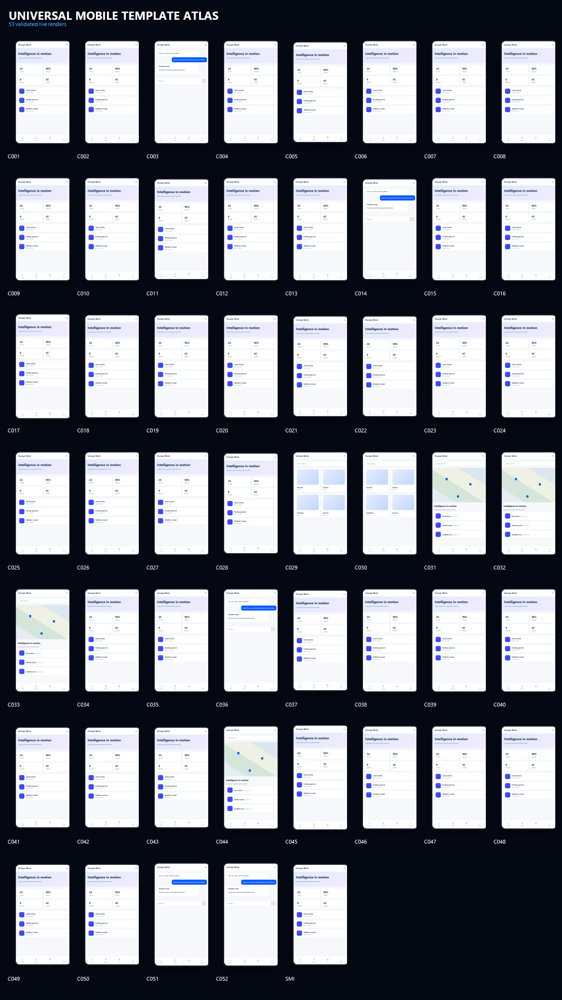
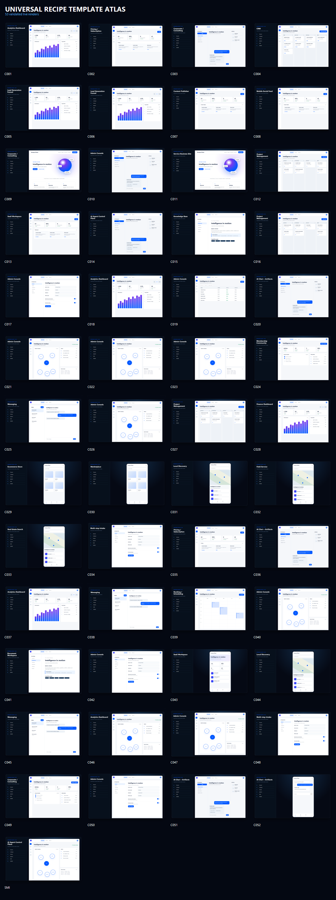

Composition, not repetition.
These three original atlas sheets summarize the retained 53 category profiles and 159 legacy design exports. They are visual pattern references, not 159 independently finished production websites. The complete collection remains preserved in your JARVIS Visual Factory V2 folder.
Desktop composition atlas

Mobile experience atlas

Interaction and workflow recipe atlas

For customer-grade presentations, inspect the three separately composed Monolith, Argent, and Atelier full-page designs.